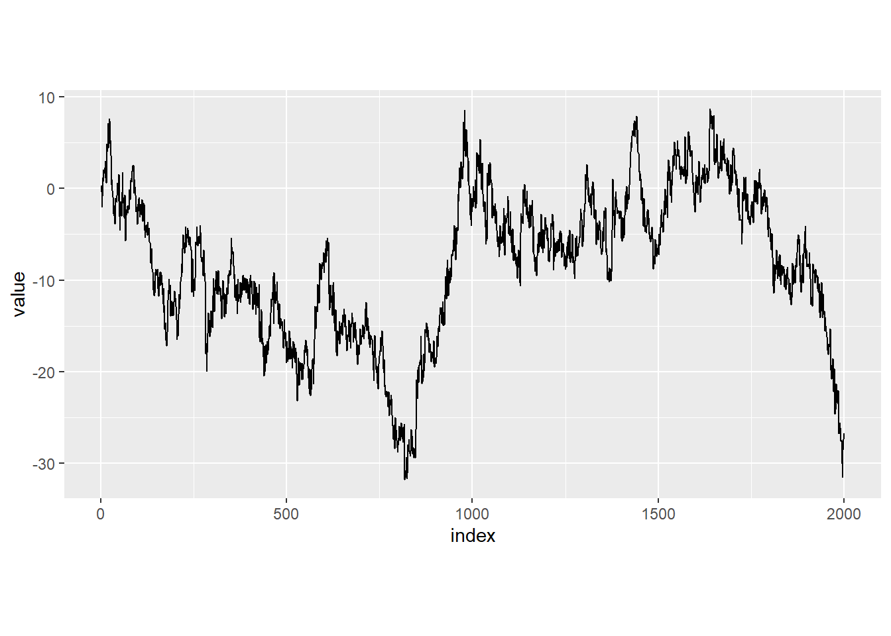

Chapter 4 Simulations
The point of this section is to show that integrating out the mixing distributions \(V_i\) of the latent field \(\mathbf{x}\) in the variance-mean mixture representation of (2.3) leads to a significant improvement in the computational efficiency of the HMC algorithm. More speed up is obtained when leveraging on sparse matrix computations and within-chain parallelization. We simulate data from a hierarchical model where the latent field follows an RW1 process with dimension \(N \in \{2000,4000\}\). The only parameter to be estimated is the kurtosis parameter \(\eta\). We fit the model using the implementations: 1. Variance-Mean Mixture: 1200 iterations and 1 chain 2. nig_model: 1200 iterations and 1 chain 3. nig_model_2: 1200 iterations and 1 chain with 4 threads per chain and utilizing sparse matrix computations
The results are summarized in the following table where ESS is the effective sample size per second for the parameter \(\eta\).
| Model | Total time (s) | ESS (Bulk) | ESS (Tail) |
|---|---|---|---|
| N=2000 Variance-Mean Mixture | 266 | 0.10 | 0.10 |
| N=2000 model_nig | 278 | 1.41 | 2.11 |
| N=2000 model_nig_2 | 77 | 5.30 | 9.56 |
| N=4000 Variance-Mean Mixture | 1132 | 0.01 | 0.04 |
| N=4000 model_nig | 884 | 0.32 | 0.54 |
| N=4000 model_nig_2 | 113 | 2.25 | 4.79 |
Below we show the code
4.1 Libraries and simulated data
library(ggplot2) # More plots
library(reshape2)
library(Matrix)
library(cmdstanr) # CmdStan R interface
library(SuppDists) # Evaluate the density of a InvGauss distribution
source("files/utils.R") # Several utility functions
options(mc.cores = parallel::detectCores())We simulate data from the following model: \(\mathbf{y}=\text{N}(\mathbf{x}, 0.7^2\mathbf{I})\), where \(\mathbf{D}_{AR1}\mathbf{x}= \mathbf{\Lambda}\).
n <- 2000 #number of data points
m <- 1 #rank deficiency of D
sigmay <- 0.7 #
eta <- 1
set.seed(123)
V <- rinvGauss(n,nu=1,lambda = 1/eta) #Mixing variables
L <- rnorm(n,0,sqrt(V)) #driving noise
path <- cumsum(L) + rnorm(n, 0, sigmay) #RW1 sample path + iid Gaussian noise
df <- data.frame(index = 1:n, path)
df_melt = melt(df, id.vars = 'index')
ggplot(df_melt, aes(x = index, y = value)) +
geom_line(size=0.5) +
theme(aspect.ratio = 0.5)
4.2 Fit with Variance-mean mixture representation
We start by fitting the model with the variance-mean mixture representation.
D <- RW1.matrix(n)
dat1 <- list(N = n-m,
Ny = n,
y = path,
h = rep(1,n-m),
meanx = 1,
D = as.matrix(D),
sigmay = sigmay,
thetaetas = 10,
thetamus = 5)model_stan1 <- cmdstan_model('files/stan/benchmarking/NIGcond.stan')
fit1 <- model_stan1$sample(data = dat1, chains = 1, iter_warmup = 200, iter_sampling = 1000)
fit1$save_object('files/stan/benchmarking/fit1.rds')fit11 <- readRDS("files/stan/benchmarking/fit1.rds")
knitr::kable(fit11$summary(c("etas")), "simple", row.names = NA, digits=2)| variable | mean | median | sd | mad | q5 | q95 | rhat | ess_bulk | ess_tail |
|---|---|---|---|---|---|---|---|---|---|
| etas | 0.94 | 0.94 | 0.22 | 0.22 | 0.55 | 1.32 | 1.04 | 27.6 | 27.78 |
4.3 Fit with nig_model
We now fit the same model with nig_model.
model_stan2 <- cmdstan_model('files/stan/benchmarking/modelNIG.stan')
fit2 <- model_stan2$sample(data = dat1, chains = 1, iter_warmup = 200, iter_sampling = 1000)
fit2$save_object('files/stan/benchmarking/fit2.rds')fit2 <- readRDS("files/stan/benchmarking/fit2.rds")
knitr::kable(fit2$summary("etas"), "simple", row.names = NA, digits=2)| variable | mean | median | sd | mad | q5 | q95 | rhat | ess_bulk | ess_tail |
|---|---|---|---|---|---|---|---|---|---|
| etas | 0.93 | 0.92 | 0.23 | 0.23 | 0.58 | 1.33 | 1 | 394.17 | 588.32 |
4.4 Fit with nig_model_2
We now fit the same model with nig_model_2, where we use sparse matrix computations and within-chain parallelization.
model_stan3 <- cmdstan_model('files/stan/benchmarking/modelNIG2.stan', cpp_options = list(stan_threads = TRUE))
fit3 <- model_stan3$sample(data = dat1, chains = 1, threads_per_chain = 4, iter_warmup = 200, iter_sampling = 1000)
fit3$save_object('files/stan/benchmarking/fit3.rds')fit3 <- readRDS("files/stan/benchmarking/fit3.rds")
knitr::kable(fit3$summary("etas"), "simple", row.names = NA, digits=2)| variable | mean | median | sd | mad | q5 | q95 | rhat | ess_bulk | ess_tail |
|---|---|---|---|---|---|---|---|---|---|
| etas | 0.93 | 0.9 | 0.22 | 0.22 | 0.59 | 1.33 | 1 | 359.04 | 646.72 |
4.5 Comparizon
Here we show the effective (bulk and tail) sample size per second for the different models
fit11$time()$total## [1] 266.8902fit11$summary("etas")["ess_bulk"]/fit11$time()$total## ess_bulk
## 1 0.103418fit11$summary("etas")["ess_tail"]/fit11$time()$total## ess_tail
## 1 0.1040842fit2$time()$total## [1] 278.6756fit2$summary("etas")["ess_bulk"]/fit2$time()$total## ess_bulk
## 1 1.414447fit2$summary("etas")["ess_tail"]/fit2$time()$total## ess_tail
## 1 2.111111fit3$time()$total## [1] 67.68172fit3$summary("etas")["ess_bulk"]/fit3$time()$total## ess_bulk
## 1 5.304792fit3$summary("etas")["ess_tail"]/fit3$time()$total## ess_tail
## 1 9.555367